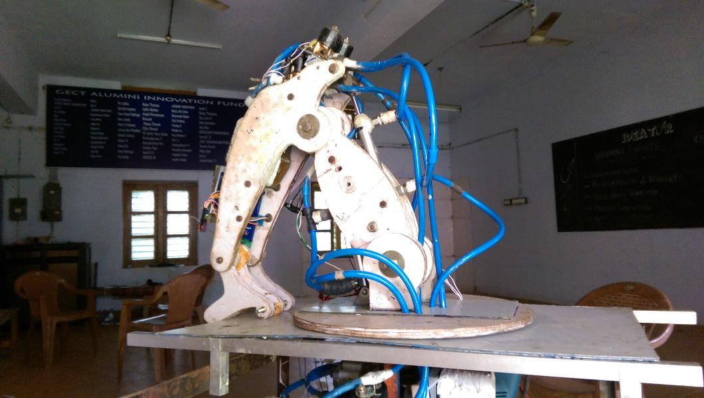

1 : Multi purpose Robotic Arm

The multipurpose Robotic arm is the brainchild of the team lead by Sreerag of 3rd year civil. After pitching their idea they were invited to Startup Village to present their prototype to suitable investors.
2 : Bed with lavatory and cleaning facilities
The project was done by Don Paul and his team from S8 Production and aimed at helping People with paralysis and their families. The project was among the top 20 projects shortlisted for Manorama Yuva Mastermind 2016 from across Kerala.
2 : 3 : iPost
iPost is A Street light monitoring and electrical accidents prevention device conceived by Shyam Pradeep of S4 EEE and realized with the help of the team at Ideator. The project won first prize at ICFoSS FITM IoT based project competition held at Trivandrum and obtained 50,000 for the further development of the project.
4 :Automatic Sealing Machine
TEAM : AJINSYAM.S , AMAL T.P, DEW JO JOSEPH
MECHANICAL ENGINEERING(2014-2018)
Automatic sealing machine is a machine which makes the seal-punching process fast and accurate. It uses scotch-yoke mechanism to convert rotation motion into reciprocating, and 2 rollers are used for the paper rolling process. The whole process is synchronized by arduino based system. Machine is versatile, that it supports papers of different thickness and replicable seal. The advantage of our sealing machine lies in the fact that it has comparatively low cost and is easy to use
5 :Pipe Inspection Robot

TEAM : Abhijath A C , Jibin Raj , Joseph Simon Alvin Chacko , Gokul M , Nineesh P
Mechanical engineering (2014-2018)
A Number Of Experimental Studies Have Explored The Concept Of Robots That Travel Inside Pipe Networks For Purposes Of Inspection, Cleaning, Or Repair. The Authors Undertook The Design And Implementation Of Such A Robot As A Senior Engineering Design Project With The Aim Of Investigating Several New Variations On This Idea. This Mobility Is Made Possible Using A Set Of Free- Spinning Wheels, Pitched Like The Blades Of A Turbine, Which Are Rotated Coaxially With The Pipe, Providing Forward Propulsion In The Manner Of A Turning Screw. Although Some Of The Project Goals Were Not Completely Fulfilled, Efforts To Correct Any Remaining Deficiencies Are Ongoing.
6 : Pick and place robot
A mobile pick and place robot is being built from scratch by our team . the bot will make use of hydraulic mechanism and microcontrollers. Robotic pick and place automation speeds up the process of picking parts up and placing them in new locations, increasing production rates. The robots can be easily programmed and tooled to provide multiple applications if required. An increase in output with a pick and place robot system offer long-term savings to companies. With the advancements in technology and affordability of robots, more pick and place robotic cells are being installed for automation applications.
7 : Robo soccer
Robo soccer is like ordinary soccer but with robots. As the part of ideator expo we conducted Robo soccer for the audience who visit the event. It is actually controlled by Bluetooth or a Bluetooth controlled robot . Each player will be given a controller and a bot . his objective is to score a goal against the opponent. Robots was made by junior ideator members, with the guidance of seniors. Hardware :
1. Micro controller/arduino
2. Bluethooth module
3. Wires
4. Small bread board
5. Robot case
6. Robot wheel
7. 2 DC motors
8. Motor drivers
9. Power supply
Software
1.arduino IDE:
8 : Line Follower Bot
Line followers are one of the most prominent kinds of robot. They have existed for a very long time , however the technologies used for building them have changed rapidly. Earlier controller boards the size of bricks were used , but now they have shrunk and become tremendously powerful. Now, technology allows you to build a line follower in just less than 10 minutes if you have all the parts for it. Hardware :
1. Arduino / Arduino Clone
2. Two continuous DCmotors
. 3. A ball caster : Ball caster.
4. An infrared sensor array.
5. Resistors.
6. Two robot wheels.
7. Chassis , usually a small acrylic board will do.
8. Four AA duracell batteries and battery holder.
Software :
1. Arduino IDE : Arduino.
Working : The working of a line follower robot is pretty straight forward. These robots have the capability to detect a black/dark line on a lighter surface depending on the contrast. They estimate whether the line underneath them is shifting towards their left/right as they move over them. Based on that estimation they give respective signals to the motors to turn left/right so as to maintain a steady center with respect to the line.
9 : Blind Man's Eye
Team members : Timken George, Neeraj K
Mobility for the blind can be defined as the ability to move with ease, speed and safely through his environment independently. Through this project we put in an effort to illuminate the perpetually dark world of the blind. We present here an electronic travel aid device consisting of ultrasonic sensor to detect obstacles on the way within a distance of two to three meters. The discrete distance of the object is then measured and sensed by tactile vibrators, thus allowing the blind to walk comfortably.
10 : Low Cost PCB Milling Machine
Team members: Anjali Balan, Hima, Anitha S, Arundas
The goal of this project is to design and construct a PCB milling machine. The design part consists of four steps: machine specifications, machine frame blue print, programming and electronics design. A PCB Mill is a device that etches out a pattern on a copper clad board such that it makes a Printed Circuit Board (PCB). PCBs are used everywhere in the field of electrical engineering to connect electrical components to one another. The advantage of the PCB Mill is its ability to create a prototype in less than a couple hours and at a much reduced cost compared to outsourcing. The current price of a commercial PCB Milling device is around 1 LAKH which is a significant investment for most small labs or individuals wishing to quickly prototype. The solution would be - Make a PCB Mill at low cost.
8 : Gesture Based Commando Disaster Management Robot
Team members: Atthar . A, Neethu P S, Megha P V, Raj Mohan, Sooraj P
The objective of this project is to build a ROBOT that can be controlled by gesture wirelessly. User is able to control motions of the robot by wearing the controller glove and performing predefined gestures. In this project we are using a gyro controlled transmitter glove for the direction and speed control of the robot. For efficient aiding in commando operating and in the field of post disaster operation we are employing metal detection, gas detection and human detection. For better control of robot and for better analytic purpose real time video transmission is also done.
11 : Inverted Pendulum Balancer
Team members: Kiran K, Christina Francis, Pranav S, Dijo Paul, Deepika Ramesh
The goal of this project is to implement an inverted pendulum balancer in the vertical two-dimensional plane, using proportional-integral-derivative (PID) feedback control. The inverted pendulum balancer is a controllable cart with an inverted pendulum attached to it. The system combines together a computational hardware, an input angle sensor and an output motor driver on a single board .The purpose of the system is to autonomously control the motion of the cart in order to prevent the pendulum from falling. The inputs over limited time in the form of pendulum position readings are mapped using algorithm to output in the form of motor control. The feedback control algorithm calculates the error in angle from the reference and relates to the motor velocity and direction using PID algorithm.The pendulum can be balanced by fine-tuning the variables-corresponding to the PID equation-according to system behavior.